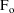
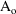

NONMEM Users Guide Part VI - PREDPP - Chapter I
I. Overview of PREDPP
NONMEM Users Guide Part VI - PREDPP - Chapter I
I. Overview of PREDPP
PRED is a NONMEM subroutine that
needs to be supplied by the user. Its basic function is to
compute model-based predictions for observations. A PRED for
population pharmacokinetic data analysis can be very
complicated and difficult to write, and the NONMEM Project
Group has tried to help by writing PREDPP, a general version
of this subroutine that is particularly suited for the
analysis of population pharmacokinetic data. This version of
PRED is informally called PREDPP -- for PRED
Population Pharmacokinetics, but the formal name
of the subroutine is simply PRED, since this is the entry
name used by the calling programs in NONMEM. PREDPP can also
be used with NONMEM to analyze pharmacokinetic data from a
single subject, because the required predictions are of a
similar nature, and it can be used with NONMEM to
simulate either population or single-subject
pharmacokinetic data. As the reader shall see, PREDPP is a
very powerful tool for computing pharmacokinetics.
There are a number of different
basic kinetic models that can be invoked by PREDPP. The user
selects the basic model by selecting one or more subroutines
from a library of subroutines of PREDPP and linking the
selected subroutines with the NONMEM and PREDPP subroutines
that must always be present in a load module.†
----------
† The NONMEM load
module is also referred to as the NONMEM executable.
----------
This process is described in
detail in chapter VII. The library is called the PREDPP
Library
For example: If the user is
interested in a one compartment linear model, he chooses
subroutine ADVAN1 from a list of PREDPP Library subroutines:
ADVAN1, ADVAN2, ADVAN3, etc., which, though distinguishable
by the different models they compute and by their informal
names as just stated, actually have the same formal name,
ADVAN, since this is the entry name used by the calling
program in PREDPP. ADVAN stands for ADVANCE because
it is the task of each ADVAN routine to advance the state
vector of compartment amounts (and partial derivatives of
the compartment amounts with respect to random variables,
when appropriate) from each point in time to the next. For
all the ADVAN subroutines, PREDPP does the housekeeping for
the state vector. For example PREDPP initializes
compartments to zero at the start of an individual record,
resets compartments to zero when requested, applies bolus
doses, turns compartments on and off, keeps track of event
and non-event times such as infusion start and stop times,
additional dose times, and model event times, and computes
amounts in the the output compartment if it is on. Another
possible name for ADVAN would have been SOLVER, because most
ADVAN routines solve a set of differential equations, either
analytically (ADVAN1-5, ADVAN7, ADVAN10, ADVAN11, ADVAN12)
or by integration (ADVAN6, ADVAN8, ADVAN13, ADVAN14,
ADVAN16, ADVAN18). ADVAN9, ADVAN15, ADVAN17 solve a set of
simultaneous differential and algebraic equations.
ADVAN16 and ADVAN18 (or ADVAN17 if there are equilibrium
compartments) may be used to solve a set of differential
equations with delay differential equations.
The kinetic models that may be
selected are:
|
• |
|
The one compartment linear model
[ADVAN1] |
|
• |
|
The one compartment linear model
with first order absorption from a drug depot compartment
[ADVAN2] |
|
• |
|
The two compartment linear
mammillary model [ADVAN3] |
|
• |
|
The two compartment linear
mammillary model with first order absorption from a drug
depot compartment [ADVAN4] |
|
• |
|
The one compartment model with
Michaelis-Menten elimination [ADVAN10] |
|
• |
|
The three compartment linear
mammillary model [ADVAN11] |
|
• |
|
The three compartment linear
model mammillary model with first order absorption from a
drug depot compartment [ADVAN12] |
|
• |
|
One of several general linear
compartmental models [ADVAN5,7] |
|
• |
|
The general nonlinear
compartmental models [ADVAN6,8,13,14,16,18] |
|
• |
|
The general nonlinear
compartmental model with equilibrium compartments
[ADVAN9,15,17] |
As will be discussed
momentarily, this list covers a good deal more than appears
to be covered at first glance. First, though, the
distinction between a general linear and a general nonlinear
compartmental model is clarified. A general linear
compartmental model describes linear kinetics with up to 999
compartments, and the computational algorithm employed is
based on use of the matrix exponential. Linear systems with
only real eigenvalues, or with possibly complex eigenvalues,
are reliably handled. A general nonlinear model describes
either linear or nonlinear kinetics with up to 999
compartments, and the computational algorithm employed is
based on a differential equation solver.
Most often with population
pharmacokinetic data analysis, a one or two compartment
model suffices. Although these models can also be
implemented with a general linear or nonlinear model, the
specific implementations that have been written for PREDPP
are based on the traditional sums of exponential forms, and
are therefore computationally very much faster than are
implementations with the general models.
With any of the models, a
peripheral output compartment is always present. Associated
with this compartment is a dimensionless pharmacokinetic
parameter,

. Of the entire amount,

, of drug introduced into the system and eliminated from it,
a fraction
 of this amount goes into this output compartment. The output
compartment may be turned on and off; while on, drug
accumulates therein, and when turned off, the amount therein
is reset to zero. So, for example, if the output compartment
is regarded as a urine compartment (so
of this amount goes into this output compartment. The output
compartment may be turned on and off; while on, drug
accumulates therein, and when turned off, the amount therein
is reset to zero. So, for example, if the output compartment
is regarded as a urine compartment (so
 might be the ratio of renal to total clearance), the
initiation and termination of a urine collection can be
simulated. Alternatively, using general linear or nonlinear
models, compartments from which no distribution can occur
into any other compartments can be defined within the system
itself. Such compartments may also be turned on and off. If
a user-defined comparment is initally off, may be turned on
and off, and may not receive a dose, it is called an
output-type compartment.†
might be the ratio of renal to total clearance), the
initiation and termination of a urine collection can be
simulated. Alternatively, using general linear or nonlinear
models, compartments from which no distribution can occur
into any other compartments can be defined within the system
itself. Such compartments may also be turned on and off. If
a user-defined comparment is initally off, may be turned on
and off, and may not receive a dose, it is called an
output-type compartment.†
----------
† Output-type
compartments have been part of PREDPP since the first
version, but were not discussed in detail. See Chapter V
Section H and VI Section B.
----------
The kinetics, i.e. drug amounts,
described by any of these models can be parameterized by
either microconstants, i.e. rate constants, or certain
reparameterizations of the microconstants, possibly
involving other parameters such as volume of distribution.
The value of a kinetic parameter can depend in turn on the
values of physiological and other concomitant variables. For
any individual, the values of these concomitant variables
can change at discrete times, and so, therefore, can the
value of the PK parameter.
Drug can be input into any of
the compartments (except the output compartment) at any
time. Bolus doses can be given. In the case of the one
compartment model with first order absorption, for example,
an IV bolus dose can be input into the central compartment,
and another oral bolus dose can be input into the drug depot
compartment at the same or different time as the first dose
is input. Also, infusions of known amount and duration can
be given. Also, a bolus dose of a known amount can be given
whose appearance into a specified dose compartment, rather
than being instantaneous, is actually governed by a
zero-order process, the rate or time-duration of which may
be regarded as a kinetic parameter whose value may be
specified or estimated. So for example, a bolus dose in the
form of a tablet may be placed in a compartment, but due to
the dissolution process, its appearance in the compartment
may be better described by a zero-order process.
If many doses are given over
time, as may happen in a clinical setting, the specification
of this in the data record structure can be tedious, and the
computation time is affected since a state vector is updated
at each time point that a dose is given. If, however, these
doses are given in a regular cyclic fashion (e.g. 5 mg at 8
AM, 1 mg at 8 PM; daily) and over such a sufficiently long
time that the system can be regarded as being at
steady-state at the times the doses of some particular
cycle, i.e. the "steady-state cycle", are given,
then steady-state kinetics can be used to greatly mitigate
the dose specification and computation time problems. Only
the steady-state cycle of doses need be specified, and the
state vector will only need to be updated at the times these
doses are given. Steady-state kinetics may be invoked for
this purpose with any of the PREDPP models (except with a
general nonlinear compartmental model when the nonlinear
kinetics imply that steady-state cannot be achieved).
Note that steady-state kinetics
cannot be used with some systems of differential equations.
This includes delay differential equations and also other
systems, for example, those in which there is a change in
kinetics outside the dosing interval. With NONMEM 7.5, an
Empirical method of Achieving Steady State may be used.
See INTRODUCTION TO NONMEM 7, section "An Empirical
Method of Achieving Steady State"
If several doses are given over
time, but they do not lead to a steady-state, the
specification of this in the data record structure might
still be tedious. However, if these doses are the same type
of dose, given with a constant interdose interval, then in
this case there is still a convenient way to mitgate the
specification problem.
All the kinetic models are
augmented by the ability to allow any dose to appear in the
system at some lag time (called an absorption lag time)
after the time the dose is nominally given. All kinetic
models are augmented by the ability to allow a fraction
(called a bioavailability fraction) of any dose to appear in
the system, rather than the nominal dose. Absorption lag
times and bioavailability fractions may be specified or
estimated.
All the kinetic models allow
model event time parameters, which allow the modelling of
discrete times at which some aspect of the system can be
changed. Model event times may be specified or
estimated.
All the kinetic models allow the
use to supply initial values for the compartments, using the
compartment initialization feature (See A_0, Chapter III,
Section I.B).
As of NONMEM 7.5, all the
kinetic models allow the user to update compartment amounts
at any time, using the A_UFLG Flag feature (See A_U, Chapter
III, Section I.B)
With general non-linear models
(ADVAN6, ADVAN8, ADVAN9, ADVAN13, ADVAN14, ADVAN15, ADVAN16,
ADVAN17, ADVAN18) the differential equations may include
terms for endogenous drug production. The Initial Steady
State feature of PREDPP may be used to compute steady state
compartment amounts without using dose event records. (See
I_SS, Chapter III, Section I.B and Chapter V, Section F.3).
This feature may be used with the compartment initialization
feature.
Not only must PRED compute model
based predictions, it must also compute partial derivatives
of the statistical model for the observations with respect
to all random variables occurring in the model (see Guide I.
See also the Introduction to NONMEM 7. Classical NONMEM
methods require the partial derivatives, but new methods may
not). This computation has proved to be a particularly
difficult one for many users to program. Just as PREDPP
serves the important purpose of greatly simplifying the
programming the user must undertake to compute complicated
population-type pharmacokinetic predictions, it also serves
the important purpose of greatly simplifying the
user-required programming of the derivative computation for
population pharmacokinetic models.
The user must still be concerned
with generating a small amount of code in the form of two
user-supplied subroutines of PREDPP. The first routine, PK,
functions essentially to compute the values of
pharmacokinetic parameters, e.g. clearance, in terms of the
values of covariables, e.g. age and weight, and the values
of random interindividual effects accounting for random
interindividual variability. The second routine, ERROR,
functions essentially to specify the residual error
structure, e.g. to specify that residual error is additive,
or that it is multiplicative. However, PREDPP allows
pharmacodynamics along with pharmacokinetics to be modeled,
and it does so by allowing pharmacodynamic models to be
specified in the ERROR routine. This may strike the user as
a strange design, which it is. The design for PREDPP allows
pharmacokinetic models to be specified conveniently, and
only as an "afterthought" does it allow the
specification of pharmacodynamic models. Detailed discussion
of PK and ERROR is to be found in chapters III and IV. A few
other user-supplied subroutines are at times required.
Detailed discussion of these is to be found in chapter VI.
In particular, use of a general nonlinear compartmental
model requires the user to supply code for the involved
differential equations, but as seen in section VI.C, this
need not be a hard task. With NM-TRAN, which is a
pre-processor to NONMEM and PREDPP, the task of creating PK
and ERROR routines is simplified, and the user need not
write the code to compute partial derivatives of the
statistical model for the observations with respect to the
random variables. $PK and $ERROR blocks describe the
statistical model. NM-TRAN supplies the code to compute the
partial derivatives.
TOP
TABLE OF CONTENTS
NEXT CHAPTER ...